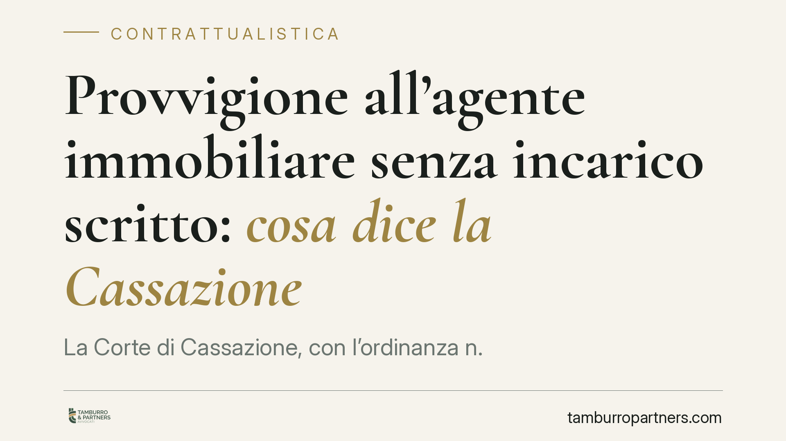

Provvigione all'agente immobiliare senza incarico scritto: cosa dice la Cassazione
La Corte di Cassazione, con l'ordinanza n. 7029 del 12 marzo 2021, ha confermato un principio destinato a incidere su molte trattative immobiliari: il diritto alla provvigione del mediatore può sorgere anche senza un incarico scritto, purché l'agente abbia effettivamente favorito l'incontro tra venditore e acquirente che poi hanno concluso l'affare. Una pronuncia che chiarisce limiti e rischi per entrambe le parti.

Il principio affermato dalla Corte
La questione è ricorrente: un proprietario contatta un'agenzia, visita un immobile o riceve l'indicazione di un potenziale acquirente, ma non firma alcun mandato. L'affare si conclude. L'agente può pretendere la provvigione?
Secondo la Cassazione (ordinanza n. 7029 del 12 marzo 2021) la risposta è affermativa. Il diritto al compenso non dipende dall'esistenza di un contratto scritto, ma dal fatto storico della mediazione: se l'agente ha messo in relazione due parti che, grazie al suo intervento, hanno poi stipulato il contratto, matura il diritto alla provvigione.
Inquadramento normativo
Il punto di partenza è l'articolo 1754 del Codice civile, che definisce mediatore chi mette in relazione due o più parti per la conclusione di un affare, senza essere legato ad alcuna di esse da rapporti di collaborazione, dipendenza o rappresentanza.
L'articolo 1755 c.c. stabilisce poi che il mediatore ha diritto alla provvigione da ciascuna delle parti "se l'affare è concluso per effetto del suo intervento". La norma non richiede la forma scritta come condizione di validità del rapporto di mediazione: il diritto al compenso si fonda sul nesso causale tra l'attività del mediatore e la conclusione dell'affare.
Diverso è il piano dell'iscrizione e dei requisiti professionali. La legge n. 39/1989 disciplina la professione di mediatore e l'iscrizione nel ruolo (oggi sostituito dalla SCIA presso la Camera di Commercio). L'esercizio abusivo della mediazione, da parte di chi non possiede i requisiti, fa venir meno il diritto alla provvigione: questo è un profilo distinto dalla forma del contratto.
Implicazioni pratiche
Per chi vende o acquista, la pronuncia significa che il rapporto verbale con l'agenzia non è privo di conseguenze economiche. Visitare un immobile su segnalazione di un agente, e poi trattare direttamente con la controparte per "saltare" la provvigione, espone al rischio concreto di doverla comunque pagare se si dimostra che l'incontro è nato dall'intervento del mediatore.
Il nodo, però, si sposta sul piano della prova. In assenza di incarico scritto, l'agente deve dimostrare di aver realmente favorito l'incontro tra le parti e che la conclusione dell'affare ne è derivata. Senza documenti, questa prova diventa più incerta e spesso si basa su elementi indiziari: scambi di messaggi, e-mail, verbali di visita, testimonianze.
Per l'agente immobiliare, la pronuncia non è un'autorizzazione a operare senza mandato. La forma scritta resta lo strumento più sicuro per definire importo della provvigione, momento di maturazione e oggetto dell'incarico. Affidarsi alla sola prova orale espone a contenziosi dall'esito imprevedibile.
Cosa fare in concreto
- Pretendete sempre la forma scritta. Chiedete o predisponete un incarico che indichi immobile, importo della provvigione e momento esatto in cui matura il diritto al compenso.
- Conservate ogni traccia documentale. Messaggi, e-mail, planimetrie inviate e verbali di visita possono diventare decisivi per ricostruire chi ha generato il contatto.
- Verificate i requisiti dell'agente. Accertatevi che il mediatore abbia presentato regolare SCIA presso la Camera di Commercio: l'esercizio abusivo fa venir meno il diritto alla provvigione.
- Non sottovalutate i contatti verbali. Se l'affare nasce da una segnalazione, valutate con attenzione prima di trattare direttamente, perché l'obbligo di pagamento può sussistere comunque.
- Chiarite per iscritto il momento di pagamento. Specificate se la provvigione è dovuta alla firma del preliminare o solo al rogito, per evitare contestazioni successive.
Conclusione
L'ordinanza ribadisce un equilibrio: la mediazione produce effetti economici anche senza contratto scritto, ma chi rivendica la provvigione deve provarne i presupposti. La forma scritta, per tutte le parti coinvolte, resta lo strumento che riduce l'incertezza e previene il contenzioso.
---
*Contributo informativo a cura di Tamburro & Partners - Avv. Giuseppe Tamburro. Non costituisce parere legale.*
Ogni contratto ha il suo equilibrio.
Se vuoi una revisione delle clausole o una redazione su misura, scrivi allo studio. Ti rispondiamo entro un giorno lavorativo.